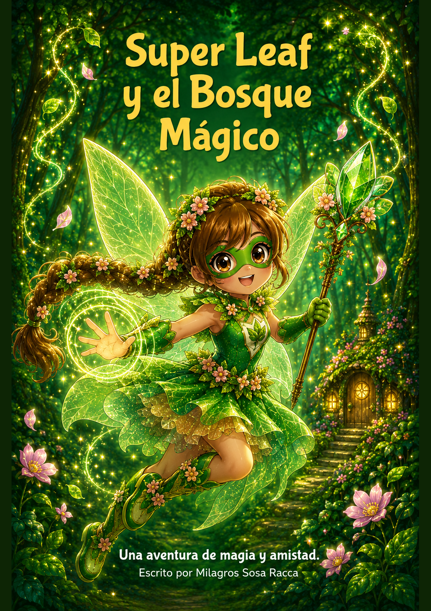
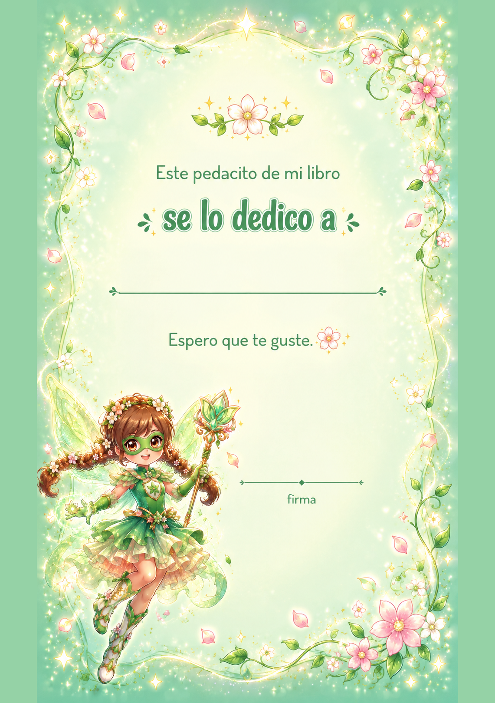
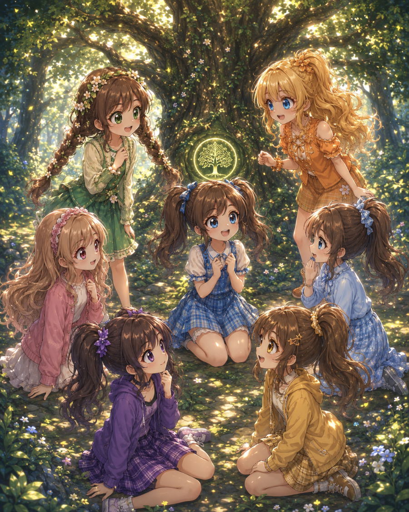
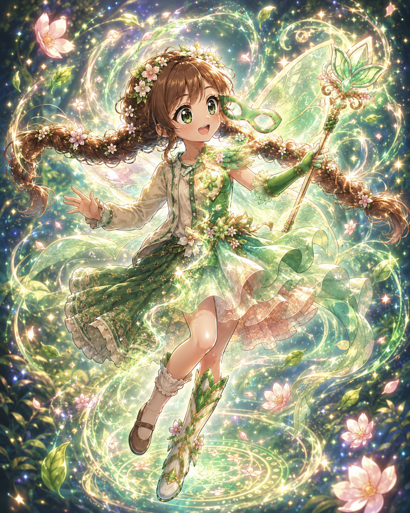
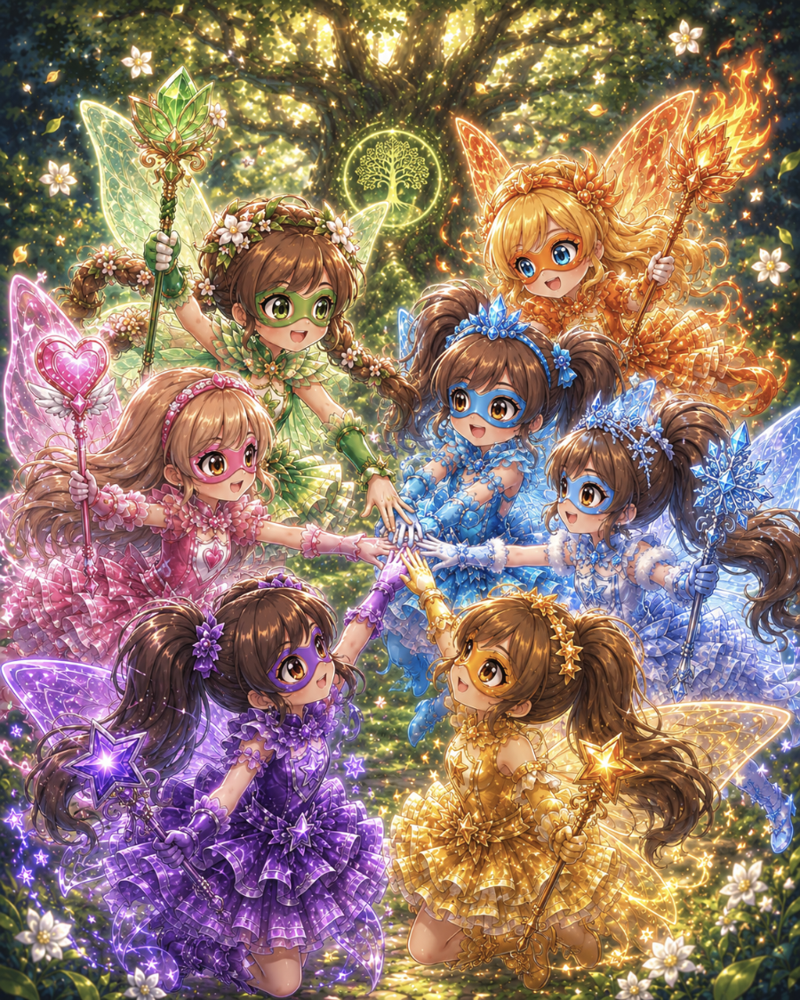

Mimi fue la primera en llegar.
Salió de su casita en el bosque con su Eevee corriendo adelante de ella. El sueño de la noche anterior le daba vueltas en la cabeza: esa voz, ese bosque, esa luz dorada. Eevee también estaba inquieto. Paraba cada tres pasos y miraba hacia el centro del bosque como si supiera algo que ella todavía no.
Cuando llegó al claro del Árbol de la Memoria, se detuvo de golpe. No estaba sola.
Había una nena con un Eevee igual al suyo mirándola con los ojos muy abiertos.
Antes de que pudieran decir algo más, llegó otra corriendo descalza con un Marill chapoteando en los charcos. Luego una con un Charmander en el hombro. Después una con un Cleffa dormido en los brazos. Luego una seria con un Psyduck con cara de dolor de cabeza. Y por último, una envuelta en un abrigo aunque no hacía tanto frío, con un Spheal rodando feliz detrás de ella.
Siete nenas. Siete Pokémon. Ninguna se conocía. Todas se miraron en silencio.

Y después de ese momento raro se rieron todas juntas, aunque no supieran muy bien por qué.
Se presentaron de a una. Mimi. Cata, la del Eevee. Calu, la descalza del Marill. Juana, la del Charmander. Lara, la del Cleffa. Luz, la seria del Psyduck. Y Sofi, la del abrigo y el Spheal.
Como si hubiera estado esperando exactamente esa pregunta, el Árbol de la Memoria pulsó. Una vez. Dos veces. Y luego habló.
El árbol brilló más fuerte. De las raíces salieron destellos de luz de distintos colores, uno para cada nena. Verde para Mimi. Plateado para Cata. Rojo y naranja para Juana. Azul frío para Sofi. Rosa y violeta para Lara. Violeta profundo para Luz. Azul turquesa para Calu.
Los destellos las envolvieron a todas durante un segundo. Y cuando la luz se apagó, cada una sentía algo diferente.
Mimi tocó un árbol cercano y lo escuchó. No con los oídos. Con algo más adentro.
Su Charmander había lanzado una llama y ella la había atajado con la mano sin quemarse. La llama le bailaba entre los dedos como si fuera agua.
El Psyduck asintió muy seriamente.
Todas miraron a Cata, que estaba muy quieta.
Cata extendió las manos hacia el cielo. De sus dedos salió una luz brillante y plateada que formó un arco iris enorme que cruzó todo el claro. Después brilló con luz dorada y copió los poderes de Mimi. Habló con un árbol. Lo escuchó responder. Y luego el brillo desapareció.
Silencio.
Se quedaron en el claro hasta que el sol empezó a bajar. Juana hacía bromas. Sofi escuchaba sin decir mucho. Lara dibujaba con un palito en la tierra. Luz registraba mentalmente todo. Calu trepaba árboles solo porque podía. Cata copiaba los poderes de todas para practicar. Y Mimi hablaba con cada animal que pasaba.
Antes de irse, las siete se pusieron de pie alrededor del árbol.
Y el Árbol de la Memoria brilló una última vez. Como diciendo: sí. Exactamente eso.
Esa noche, de vuelta en sus casas, cada una guardó el secreto. Pero todas sabían que nada iba a ser igual. Y tenían razón.
Pasaron algunas semanas desde aquella tarde en el claro del Árbol de la Memoria.
Las siete nenas habían vuelto a sus casas. Habían guardado el secreto. Pero cada una practicaba sus poderes a escondidas, esperando el momento en que el bosque las necesitara de verdad.
Ese momento llegó un día cualquiera.
Mimi paseaba con su Eevee por el parque cuando de repente sintió algo raro. El viento traía un mensaje extraño, como un susurro entre las hojas. Cerró los ojos y usó su poder de hablar con los animales.
Mimi miró a su Eevee, que ya estaba listo con los ojitos brillando. Y por primera vez desde aquella tarde en el claro, sintió que algo dentro de ella hacía clic. Era el momento.
Una luz verde la envolvió. Su Eevee brilló y se transformó en un poderoso Leafeon. Y cuando la luz se apagó, Mimi ya no era Mimi.
Era Super Leaf. 🌿

Salieron corriendo hacia el Bosque Mágico.
El Bosque Mágico estaba muy mal. Las flores estaban cerradas. Los pájaros no cantaban. Y en el aire se sentía un silencio aterrador.
Super Leaf avanzó despacio entre los árboles. De repente escuchó una voz grave y malvada.
Super Leaf se asomó entre los arbustos y vio a un hombre alto con una capa negra y un sombrero enorme. Se llamaba Doctor Cero, el villano más peligroso del mundo Pokémon. Tenía una máquina gigante plateada que atrapaba a los Pokémon dentro de unas esferas especiales.
Levantó las manos. De la tierra empezaron a crecer enredaderas gigantes que rodearon la máquina del Doctor Cero. Pero el villano apretó un botón y la máquina las cortó todas de un rayo.
Super Leaf sabía que tenía razón. Necesitaba a su equipo. Sacó su hoja mágica brillante y la lanzó al cielo. En el aire dibujó una luz verde que se veía desde toda la ciudad. La señal del equipo.
En distintos lugares del mundo, seis nenas vieron la señal. Y en seis destellos de colores distintos, las seis superheroínas se transformaron y volaron hacia el Bosque Mágico.

Cuando llegaron, el Doctor Cero las miró sorprendido pero enseguida volvió a sonreír.
🔮 Super Psy cerró los ojos y leyó la mente del Doctor Cero.
❄️ Super Ice congeló las patas de la máquina. 🔥 Super Fire creó un escudo para proteger al equipo. 🧚 Super Fairy durmió a los ayudantes del villano con su polvo mágico. 💧 Super Aqua saltó altísimo y lanzó un chorro de agua potentísimo. ⭐ Superstar creó un arco iris que rodeó la máquina y copió el poder de Super Leaf para hacer crecer enredaderas gigantes.
Super Leaf respiró hondo y con un grito lanzó las plantas más gigantes que había hecho. Enormes raíces salieron de la tierra y aplastaron el centro de la máquina.
El Doctor Cero quiso escapar pero Super Psy lo detuvo moviendo un árbol enorme con la mente. Los Pokémon del bosque lo rodearon. El villano no tuvo más remedio que rendirse.
Cuando todo terminó, el Bosque Mágico volvió a brillar. Las flores se abrieron, los pájaros cantaron y el agua del río volvió a correr feliz. Super Leaf curó a todos los Pokémon que estaban lastimados.
Las siete superheroínas se miraron y chocaron las manos todas juntas en el centro.
En el Bosque Mágico, siete amigas descubren que tienen poderes increíbles: hoja, estrella, hielo, fuego, hada, mente y agua. Cada una con su Pokémon, se convierten en el Equipo Leaf.
Pero cuando el malvado Doctor Cero atrapa a los Pokémon del bosque, las siete superheroínas tendrán que unir sus fuerzas para salvarlos. ¿Podrán devolverle la magia al bosque?
Una aventura de magia, amistad y valentía… donde juntas, todo es posible. 🌟
Escrito por Milagros Sosa Racca